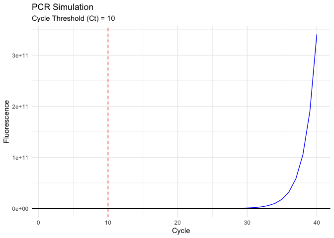

PCRSimPlot: PCR Simulation and Plotting
PCRSimPlot is an R package for simulating and plotting PCR (Polymerase Chain Reaction) data. It includes functions for generating PCR data from specified parameters and visualizing the results.
Installation
You can install the development version of PCRSimPlot from GitHub.
if (!require("pak")) install.packages("pak")
pak::pak("Attalowe/PCRSimPlot")
library(PCRSimPlot)Overview of the functions in {PCRSimPlot}
-
simulate_pcr(): simulates PCR data based on initial DNA concentration (N0), amplification efficiency (E), and a fluorescence threshold (threshold). The function returns alistwith two elements:
- pcr_data: A data frame containing the simulated PCR data with columns Cycle, DNA, and Fluorescence.
- Ct: The cycle threshold (Ct) value at which the fluorescence exceeds the threshold.
Example
result <- simulate_pcr(N0 = 10, E = 1.8, threshold = 10000)
head(result$pcr_data)
#> Cycle DNA Fluorescence
#> 1 1 10.0000 1031.942
#> 2 2 32.4000 1093.936
#> 3 3 58.3200 1165.671
#> 4 4 104.9760 1294.794
#> 5 5 188.9568 1527.216
#> 6 6 340.1222 1945.576
print(result$Ct)
#> [1] 9-
plot_pcr()Plots the simulated PCR data, showing fluorescence over cycles and the cycle threshold (Ct). # Usage
plot_pcr(pcr_data, Ct)Arguments:
pcr_data: A data frame containing the PCR data (typically from simulate_pcr()). Ct: The cycle threshold (Ct) value. Returns:
A ggplot object visualizing the PCR data with a line plot of fluorescence over cycles, including a vertical line indicating the Ct valu
Example
This is a basic example which shows you how to solve a common problem:
result <- simulate_pcr(N0 = 10, E = 1.8)
plot <- plot_pcr(result$pcr_data, result$Ct)
print(plot)
Lifecycle
This package is currently an experimental, as defined by the RECON software lifecycle. This means that it is functional, but interfaces and functionalities may change over time, testing and documentation may be lacking.
Contributions
Contributions are welcome via pull requests.
Code of Conduct
Please note that the PCRSimPlot project is released with a Contributor Code of Conduct. By contributing to this project, you agree to abide by its terms.
Citing this package
citation("PCRSimPlot")
#> To cite package 'PCRSimPlot' in publications use:
#>
#> Lowe A (2024). _PCRSimPlot: PCR Simulation and Plotting_.
#> <https://Attalowe.github.io/PCRSimPlot/>.
#>
#> A BibTeX entry for LaTeX users is
#>
#> @Manual{,
#> title = {PCRSimPlot: PCR Simulation and Plotting},
#> author = {Atta Lowe},
#> year = {2024},
#> url = {https://Attalowe.github.io/PCRSimPlot/},
#> }